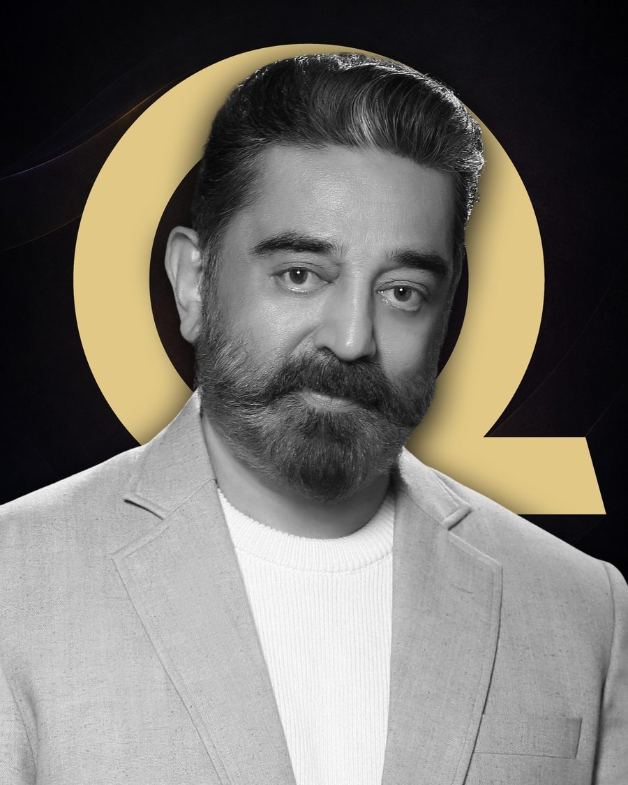
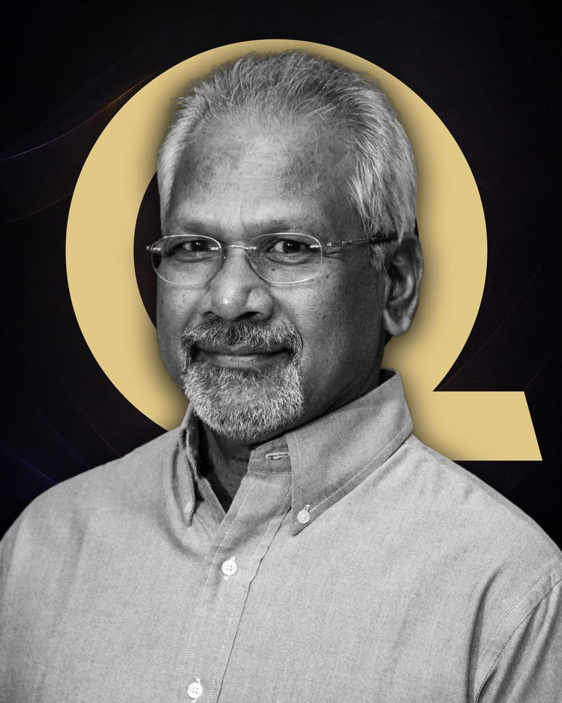
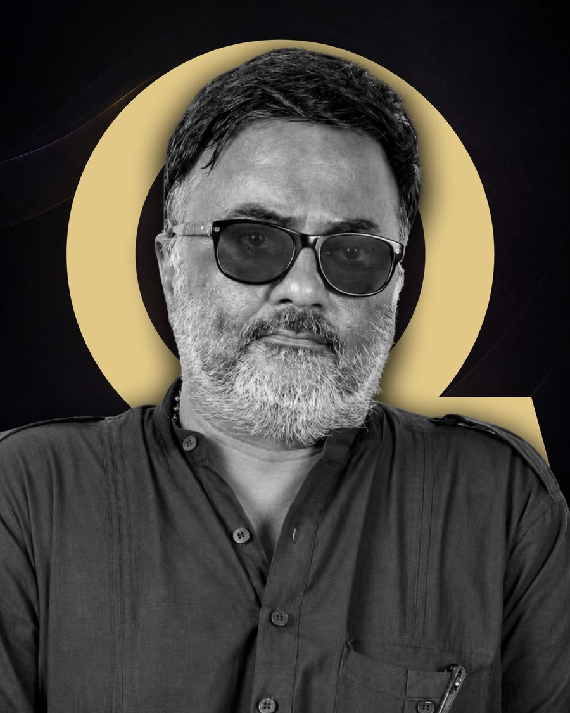
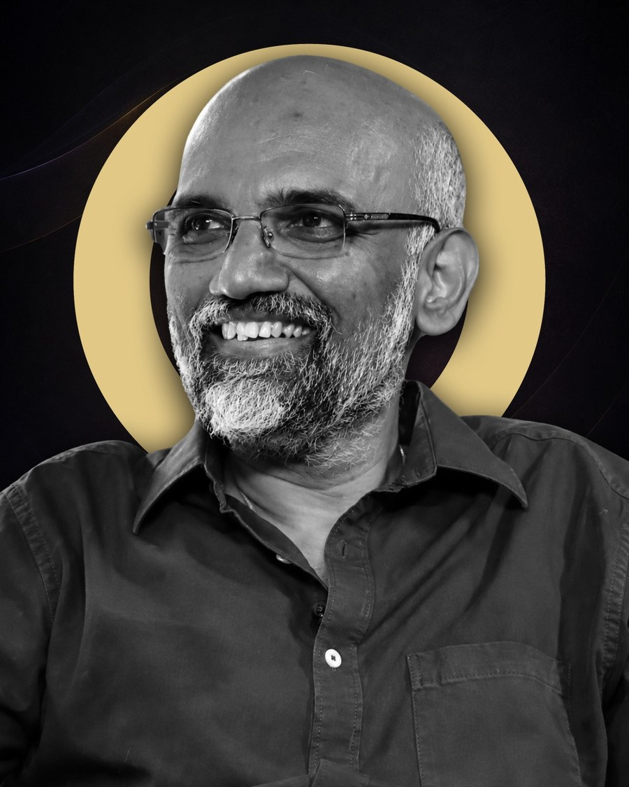
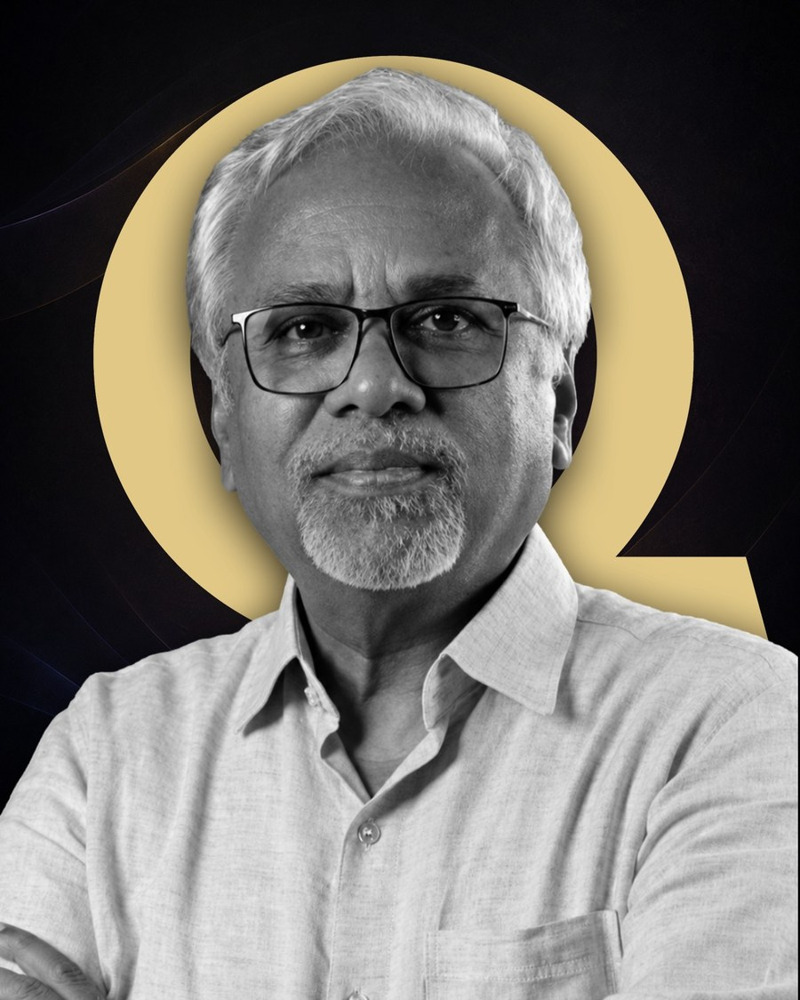
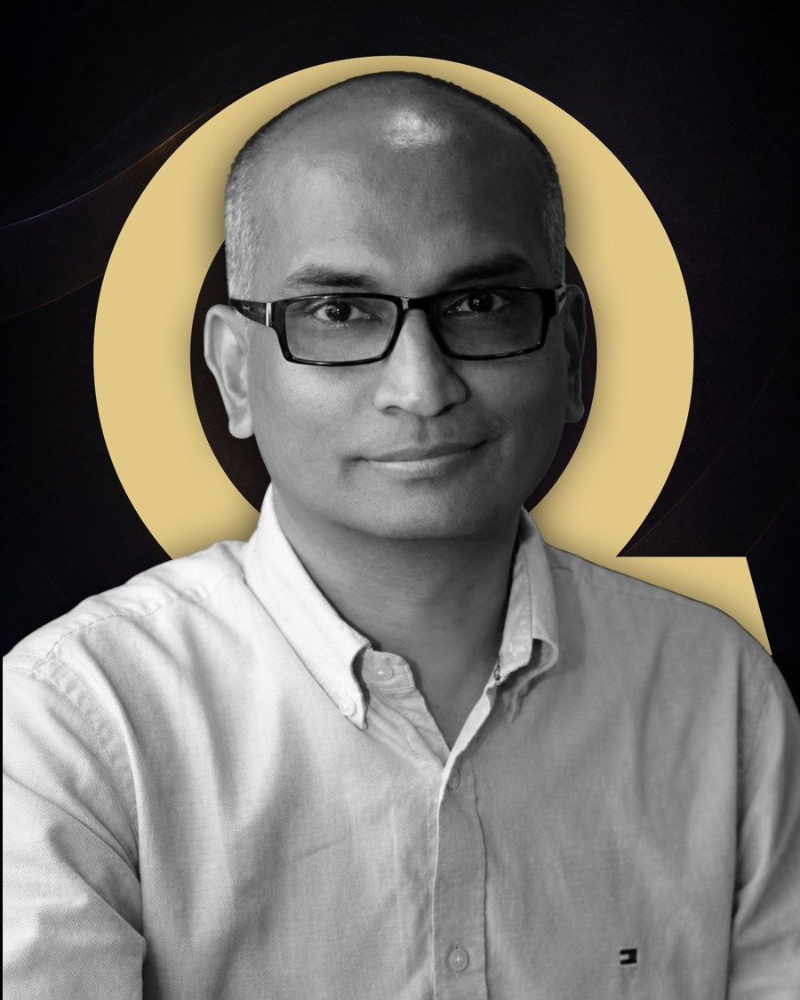

Eleven months. Every craft of cinema. A film city, a faculty of working professionals, and an advisory board of the people who built Indian cinema.
Our advisory board isn't a list of endorsers. It's the directors, cinematographers and editors whose films a billion people grew up on, guiding the curriculum you'll train inside.

Advisory Board
Advisory Board
Advisory Board
Advisory Board
Advisory Board
Advisory Board


An advisory board of legends who lead masterclasses through your year, and a faculty of working cinematographers, editors and directors of photography. Learn directly from the people behind the films you grew up on.
Your instructors aren't retired academics, they're cinematographers, editors and directors of photography with current credits across Netflix, festivals and Indian cinema, teaching you on real productions.

Documentary filmmaker, screenwriter & film educator

Super Deluxe · Sita Ramam · Coke Studio Tamil

Killer Soup · Asst. to A. Sreekar Prasad (RRR, Baahubali)

Gargi · Auto Queens (IDFA) · The Feast (IFFLA)

15+ yrs across live concerts, broadcast & game audio · ex-Head of Audio, Bridge Academy · L-Acoustics, Dante & DAWs

Mentored 150+ students at L.V. Prasad Film Institute · 25,000+ trained through 180+ workshops across India
You've watched hundreds, imagined your own, shot on whatever you had. But no one has shown you how to turn that obsession into a professional craft.
Over eleven months you make six films on professional equipment, beside mentors who've worked on Netflix shows, Emmy-nominated projects and landmark Indian cinema.
Not just a certificate, a portfolio of completed films, a network of industry mentors, and the command that comes from doing the work.

A 30-acre campus of real, varied locations, glass-and-steel buildings, atriums, courtyards and grounds that become your sets, with edit & DI suites and a Qube-equipped theatre. You don't simulate a production. You walk onto one.

Every morning is film language and craft. Every afternoon you're on set, real cameras, real sound, real edit suites, beside industry-seasoned faculty. By month eleven you walk away with a portfolio of six completed films and the skill to back them.
Structure, screenwriting, dialogue.
Blocking, performance, visual story.
Camera, light, composition, colour.
Assembly, pacing, post, DI.

"Students graduate knowing one craft, but the industry needs people who understand all of them. The gap has never been wider. QURA is what I would have wanted at twenty-two."

Pioneer in digital cinema, 7,000+ installations across 48 countries. Equipment, screening facilities, industry network and internships.
NAAC A++ accredited, with a city campus at RMZ Millennium Park and the 30-acre Thandalam campus. World-class facilities and certification.

India's leading filmmaking education platform with 18,000+ learners. Drives admissions, industry engagement and the advisory board.
A data-backed reason this is the moment to train as a complete filmmaker.
India's media & entertainment industry is projected to reach $30 billion by 2026, fuelled by OTT platforms, regional content and digital-first studios.
Applications for the January 2027 batch are open. The film academy where you learn every craft, not just one.